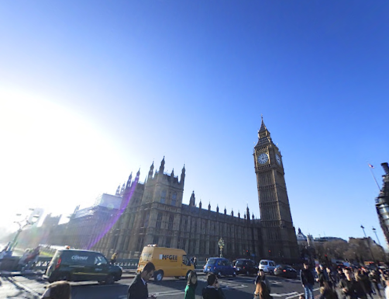

Big Ben es el nombre con el que se conoce a la gran campana del reloj situado en el extremo noroeste del Palacio de Westminster, la sede del Parlamento del Reino Unido, en Londres. Popularmente, este nombre se utiliza por extensión para referirse también al reloj de la torre. Su nombre oficial era Clock Tower («Torre del Reloj»), hasta que en 2012 pasó a denominarse Elizabeth Tower («Torre de Isabel»), en honor al Jubileo de Diamante de la reina Isabel II.